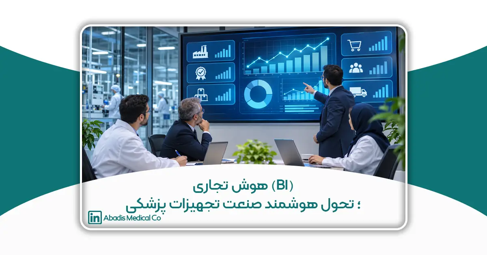

مقدمه
در دنیای امروز، صنعت تجهیزات پزشکی تنها به تولید محصولات باکیفیت محدود نمیشود. افزایش رقابت، الزامات سختگیرانه استانداردهای بینالمللی، پیچیدگی زنجیره تأمین و ضرورت پاسخگویی سریع به نیازهای مراکز درمانی، شرکتهای این حوزه را با چالشهای مدیریتی متعددی مواجه کرده است.
در چنین شرایطی، دسترسی به اطلاعات دقیق و قابلاعتماد، یکی از عوامل مهم موفقیت سازمانها محسوب میشود. اطلاعات تولید، فروش، موجودی انبار، کیفیت محصولات، عملکرد تأمینکنندگان و رضایت مشتریان زمانی ارزش واقعی پیدا میکنند که بتوان آنها را به تحلیلهای کاربردی و تصمیمهای مدیریتی تبدیل کرد.
اینجاست که هوش تجاری (Business Intelligence یا BI) بهعنوان ابزاری برای مدیریت دادهمحور وارد عمل میشود.
هوش تجاری با جمعآوری، یکپارچهسازی و تحلیل اطلاعات سازمانی، امکان مشاهده وضعیت عملکرد شرکت را از طریق داشبوردهای مدیریتی و گزارشهای تحلیلی فراهم میکند.
برای شرکتهای تولیدکننده تجهیزات پزشکی، این فناوری میتواند نقش مهمی در کاهش خطاهای عملیاتی، شناسایی فرصتهای بهبود کیفیت، مدیریت هزینهها و افزایش بهرهوری داشته باشد.
در ایران نیز توجه به استفاده از فناوریهای نوین مدیریتی در صنعت تجهیزات پزشکی در حال گسترش است. شرکت دانشبنیان مخازن طبی آبادیس با سرمایهگذاری در توسعه زیرساختهای هوش تجاری و بهرهگیری از تحلیل دادهها در مدیریت سازمان، در مسیر توسعه مدیریت هوشمند و مبتنی بر شواهد حرکت کرده است.
آبادیس بنا بر اعلام شرکت، خود را نخستین سرمایهگذار در حوزه هوش تجاری در صنعت تجهیزات پزشکی ایران معرفی میکند؛ ادعایی که برای انتشار بهعنوان یک جایگاه تاریخی قطعی، نیازمند تأیید مستندات مربوط به زمان و دامنه این سرمایهگذاری است.
در این مقاله، مفهوم BI، کاربردهای آن در صنعت تجهیزات پزشکی، ارتباط با استانداردهای کیفیت، شاخصهای کلیدی عملکرد و نقش آن در آینده مدیریت شرکتهای تولیدکننده تجهیزات پزشکی بررسی میشود.
هوش تجاری (BI) چیست؟
هوش تجاری یا Business Intelligence مجموعهای از روشها، فرایندها و فناوریهاست که دادههای خام سازمان را به اطلاعات قابلتحلیل و قابلاستفاده برای تصمیمگیری تبدیل میکند.
در یک شرکت تولیدکننده تجهیزات پزشکی، اطلاعات بهصورت روزانه در سامانههای مختلف ثبت میشوند؛ از جمله:
- نرمافزارهای مالی و حسابداری
- سیستمهای برنامهریزی منابع سازمانی (ERP)
- نرمافزارهای مدیریت ارتباط با مشتری (CRM)
- سیستمهای انبارداری
- سامانههای کنترل کیفیت و تولید
- سیستمهای خدمات پس از فروش
- نرمافزارهای مدیریت سفارشها و صادرات
اگر این اطلاعات بهصورت جداگانه نگهداری شوند، تهیه یک گزارش جامع از عملکرد سازمان دشوار خواهد بود.
BI با ایجاد ارتباط میان منابع اطلاعاتی، دادهها را در قالب نمودارها، جداول و شاخصهای قابلفهم ارائه میکند.
برای مثال، مدیر کارخانه میتواند در یک داشبورد مشاهده کند که میزان تولید روزانه چقدر بوده، چه تعداد محصول نامنطبق شناسایی شده، وضعیت توقف ماشینآلات چگونه است و کدام خطوط تولید به اصلاح فرایند نیاز دارند.
به این ترتیب، تصمیمگیری از حالت صرفاً تجربی به سمت تصمیمگیری مبتنی بر داده (Data-Driven Decision-Making) حرکت میکند.
هوش تجاری چگونه کار میکند؟
فرایند عملکرد BI معمولاً شامل پنج مرحله اصلی است:
۱. جمعآوری دادهها
در مرحله نخست، اطلاعات از سامانههای عملیاتی سازمان دریافت میشوند. این دادهها ممکن است شامل سفارشهای فروش، گزارشهای تولید، اطلاعات مالی، نتایج آزمونهای کیفیت و سوابق شکایات مشتریان باشند.
۲. پاکسازی و اعتبارسنجی دادهها
دادههای تکراری، ناقص یا دارای مغایرت شناسایی و اصلاح میشوند.
این مرحله اهمیت زیادی دارد؛ زیرا تصمیمهای مدیریتی مبتنی بر دادههای اشتباه میتوانند نتیجه نامناسبی ایجاد کنند.
۳. یکپارچهسازی اطلاعات
دادههای سامانههای مختلف به یک ساختار مشترک منتقل میشوند.
در این مرحله میتوان برای هر محصول، مشتری، سفارش یا بچ تولیدی شناسه مشخصی تعریف کرد تا ارتباط اطلاعات حفظ شود.
۴. تحلیل و محاسبه شاخصها
پس از آمادهسازی دادهها، شاخصهای عملکرد محاسبه میشوند.
برای مثال، نرخ ضایعات تولید، درصد تحویل بهموقع، میزان تحقق اهداف فروش یا روند شکایات مشتریان قابلاندازهگیری خواهند بود.
۵. نمایش اطلاعات در داشبوردهای مدیریتی
نتایج تحلیل به شکل نمودارها، جداول و گزارشهای تعاملی ارائه میشوند.
این داشبوردها میتوانند متناسب با سطح دسترسی و نیاز مدیرعامل، مدیر تولید، مسئول کیفیت یا کارشناسان فروش طراحی شوند.
اهمیت هوش تجاری در شرکتهای تجهیزات پزشکی
صنعت تجهیزات پزشکی به دلیل ارتباط مستقیم محصولات با سلامت بیماران، نیازمند کنترل دقیق فرایندهای تولید، کیفیت، شناسایی محصول و پیگیری عملکرد پس از عرضه است.
برخلاف بسیاری از صنایع، یک خطا در تولید یا کنترل کیفیت تجهیزات پزشکی ممکن است پیامدهایی فراتر از زیان مالی داشته باشد.
استاندارد بینالمللی ISO 13485:2016 چارچوبی برای نظام مدیریت کیفیت سازمانهای فعال در حوزه تجهیزات پزشکی ارائه میکند و بر کنترل فرایندها، رعایت الزامات قانونی و مدیریت ریسک تأکید دارد [۱].
هوش تجاری میتواند با فراهم کردن امکان پایش منظم اطلاعات، به اجرای مؤثرتر فرایندهای مدیریت کیفیت کمک کند.
مهمترین مزایای BI در این صنعت عبارتاند از:
- افزایش شفافیت عملکرد سازمان
- شناسایی سریعتر مغایرتها و مشکلات
- بهبود برنامهریزی تولید
- کنترل موجودی و کاهش کمبود مواد اولیه
- تحلیل وضعیت فروش و بازار
- ارزیابی عملکرد تأمینکنندگان
- پایش شکایات و بازخورد مشتریان
- حمایت از تصمیمگیریهای مدیریتی
البته BI جایگزین سیستم مدیریت کیفیت یا الزامات قانونی نمیشود، بلکه ابزاری مکمل برای نظارت و تحلیل عملکرد آنهاست.
کاربرد BI در مدیریت تولید تجهیزات پزشکی
یکی از مهمترین کاربردهای هوش تجاری در شرکتهای تجهیزات پزشکی، تحلیل عملکرد خطوط تولید است.
در محیط تولید، اطلاعاتی مانند تعداد محصولات تولیدشده، مدت توقف ماشینآلات، مصرف مواد اولیه، ضایعات و میزان تحقق برنامه تولید، بهصورت مستمر ایجاد میشوند.
BI میتواند این اطلاعات را در قالب یک داشبورد تولید نمایش دهد.
پایش راندمان تولید
مدیر تولید میتواند عملکرد واقعی هر خط را با ظرفیت یا برنامه تولید مقایسه کند.
برای مثال، اگر یک خط تولید در چند روز متوالی کمتر از برنامه فعالیت داشته باشد، بررسی روند دادهها به شناسایی علت احتمالی کمک میکند.
تحلیل ضایعات
با ثبت تعداد محصولات ضایعاتی و دستهبندی علت آنها، میتوان فرایندهایی را که بیشترین میزان اتلاف را دارند شناسایی کرد.
بررسی توقف ماشینآلات
ثبت مدت و علت توقف دستگاهها امکان تحلیل الگوهای خرابی و بهبود برنامه نگهداری پیشگیرانه را فراهم میکند.
شاخص اثربخشی کلی تجهیزات (OEE)
شاخص Overall Equipment Effectiveness یکی از معیارهای متداول برای بررسی عملکرد تجهیزات تولیدی است.
این شاخص از حاصلضرب سه عامل به دست میآید:
OEE = Availability × Performance × Quality
که در آن:
- Availability نشاندهنده میزان دسترسپذیری تجهیزات است.
- Performance نسبت سرعت عملکرد واقعی به عملکرد مبنا را نشان میدهد.
- Quality سهم محصولات قابلقبول از کل تولید را مشخص میکند.
تحلیل این شاخص میتواند در شناسایی فرصتهای بهبود عملکرد خطوط تولید مؤثر باشد.
نقش BI در کنترل کیفیت و کاهش محصولات نامنطبق
در صنعت تجهیزات پزشکی، کیفیت محصول ارتباط مستقیمی با ایمنی و عملکرد مورد انتظار آن دارد.
از این رو، ثبت و تحلیل اطلاعات کنترل کیفیت از اهمیت ویژهای برخوردار است.
هوش تجاری میتواند دادههای مربوط به نتایج بازرسی، آزمونهای محصول، عدم انطباقها و اقدامات اصلاحی را بهصورت یکپارچه تحلیل کند.
کاربردهای عملی BI در کنترل کیفیت
تحلیل عدم انطباقها: بررسی تعداد و نوع عدم انطباقهای ثبتشده در دورههای مختلف.
شناسایی روندهای نامطلوب: تشخیص افزایش تدریجی خطاها یا تغییر در نتایج آزمونها.
ارزیابی اثربخشی اقدامات اصلاحی: مقایسه وضعیت یک مشکل قبل و بعد از اجرای اقدام اصلاحی.
تحلیل عملکرد تأمینکنندگان: شناسایی مواد اولیه یا تأمینکنندگانی که بیشترین مغایرت را ایجاد کردهاند.
پایش کیفیت محصولات: بررسی شاخصهای کیفیت بر اساس نوع محصول، خط تولید یا شماره بچ.
برای مثال، اگر میزان عدم انطباق یک گروه محصول در سه ماه متوالی افزایش یابد، داشبورد BI میتواند این روند را مشخص کند.
با این حال، تصمیم درباره پذیرش یا رد محصول باید همچنان بر اساس روشهای مصوب کنترل کیفیت و توسط افراد دارای اختیار انجام شود؛ نه صرفاً بر اساس یک نمودار مدیریتی.
نقش هوش تجاری در مدیریت انبار و زنجیره تأمین
تأمین بهموقع مواد اولیه و کنترل موجودی، از عوامل کلیدی استمرار تولید تجهیزات پزشکی هستند.
کمبود مواد اولیه میتواند موجب توقف تولید شود و موجودی بیشازحد نیز سرمایه در گردش شرکت را درگیر کند.
با استفاده از BI میتوان اطلاعات خرید، موجودی انبار، مصرف مواد و سفارشهای تولید را تحلیل کرد.
مهمترین کاربردها
- شناسایی اقلام نزدیک به نقطه سفارش
- بررسی روند مصرف مواد اولیه
- محاسبه گردش موجودی
- تحلیل زمان تأمین کالا
- شناسایی موجودی راکد
- بررسی مغایرتهای انبارگردانی
- ارزیابی عملکرد تأمینکنندگان
برای مثال، اگر مصرف یک ماده اولیه در فصل خاصی افزایش یابد، تحلیل دادههای دورههای گذشته میتواند به برنامهریزی بهتر سفارشها کمک کند.
در مورد مواد و محصولات دارای تاریخ انقضا، پایش تاریخ مصرف و وضعیت موجودی نیز اهمیت دارد.
البته پیشبینی مصرف به کمک BI باید در کنار الزاماتی مانند کنترل شرایط نگهداری، ردیابی بچ و رعایت روشهای مصوب انبارداری انجام شود.
کاربرد هوش تجاری در فروش و بازاریابی تجهیزات پزشکی
مدیریت فروش در صنعت تجهیزات پزشکی، بهویژه در شرکتهایی که با بیمارستانها، مراکز درمانی و نمایندگان فروش همکاری دارند، نیازمند تحلیل دقیق بازار است.
هوش تجاری امکان بررسی عملکرد فروش از ابعاد مختلف را فراهم میکند.
تحلیل فروش بر اساس محصول
مدیران میتوانند محصولات پرفروش، کمفروش و دارای روند رشد یا کاهش فروش را شناسایی کنند.
تحلیل فروش جغرافیایی
بررسی فروش به تفکیک استان، شهر یا منطقه میتواند به شناسایی بازارهای بالقوه کمک کند.
ارزیابی نمایندگان فروش
با تعریف شاخصهای مشخص، میتوان میزان تحقق اهداف فروش، تعداد مشتریان فعال و عملکرد نمایندگان را تحلیل کرد.
پیشبینی تقاضا
استفاده از دادههای تاریخی سفارشها و روندهای بازار میتواند به برآورد تقاضای آینده کمک کند.
تحلیل رضایت مشتریان
ترکیب اطلاعات فروش با دادههای CRM امکان بررسی ارتباط میان عملکرد خدمات، بازخورد مشتریان و تکرار خرید را فراهم میکند.
نتیجه چنین تحلیلهایی میتواند برنامهریزی فروش را از تصمیمهای مبتنی بر حدس به سمت برنامهریزی مبتنی بر شواهد هدایت کند.
BI و توسعه صادرات تجهیزات پزشکی
صادرات تجهیزات پزشکی با چالشهایی مانند تفاوت مقررات کشورها، پیچیدگی بازارهای هدف، زمانبندی سفارشها و مدیریت نمایندگان بینالمللی همراه است.
شرکتهای صادراتمحور میتوانند از هوش تجاری برای تحلیل فرصتهای بازار و عملکرد صادرات استفاده کنند.
برای مثال، یک داشبورد صادرات میتواند اطلاعات زیر را نمایش دهد:
- میزان فروش صادراتی به تفکیک کشور
- روند سفارشهای مشتریان خارجی
- ارزش فرصتهای فروش در حال مذاکره
- نرخ تبدیل سرنخها به سفارش
- مدتزمان پیگیری مشتریان
- عملکرد توزیعکنندگان خارجی
- وضعیت تحویل سفارشها
- سودآوری بازارها پس از محاسبه هزینههای مرتبط
این اطلاعات به مدیران کمک میکند بازارهایی را که ظرفیت رشد بیشتری دارند شناسایی کنند.
همچنین میتوان عملکرد فعالیتهای بازاریابی بینالمللی، از جمله نمایشگاهها و مذاکرات تجاری، را از نظر تبدیل به فرصت فروش ارزیابی کرد.
با این وجود، اطلاعات BI بهتنهایی برای تعیین قابلیت ورود محصول به بازار خارجی کافی نیست و الزامات ثبت محصول، مجوزها و مقررات هر کشور باید جداگانه بررسی شوند.
نقش BI در پایش پس از عرضه و PMCF
یکی از کاربردهای تخصصی هوش تجاری در صنعت تجهیزات پزشکی، استفاده از آن در تحلیل اطلاعات پس از عرضه محصول است.
مطابق مقررات اتحادیه اروپا، نظام پایش پس از عرضه یا Post-Market Surveillance باید دادههای مرتبط با کیفیت، عملکرد و ایمنی تجهیزات پزشکی را بهصورت نظاممند جمعآوری و تحلیل کند [۲].
BI میتواند به تجمیع و تحلیل این اطلاعات کمک کند.
برای مثال، دادههای مربوط به شکایات مشتریان، بازخورد مصرفکنندگان، موارد نقص محصول و اقدامات اصلاحی میتوانند در داشبوردهای تخصصی نمایش داده شوند.
کاربردهای BI در PMS
- بررسی تعداد شکایات بر اساس محصول
- تحلیل روند وقوع مشکلات
- بررسی فراوانی گزارشهای خرابی
- پایش زمان رسیدگی به شکایات
- ارزیابی اثربخشی اقدامات اصلاحی
- شناسایی روندهای احتمالی مرتبط با ایمنی
تفاوت PMS و PMCF
پایش پس از عرضه (PMS) یک فرایند گسترده برای جمعآوری و تحلیل اطلاعات محصول پس از ورود به بازار است.
پیگیری بالینی پس از عرضه (PMCF) بخشی تخصصی از این چارچوب محسوب میشود که در موارد مرتبط، با هدف تکمیل و بهروزرسانی شواهد بالینی محصول انجام میگیرد.
بنابراین، هر داده حاصل از رضایتسنجی یا شکایت مشتری، الزاماً داده PMCF محسوب نمیشود.
BI میتواند در تحلیل دادههای PMCF نیز مورد استفاده قرار گیرد، مشروط بر اینکه دادهها از طریق روشهای معتبر، متناسب با برنامه PMCF و الزامات مربوط جمعآوری شده باشند.
ارتباط هوش تجاری با استاندارد ISO 13485
استاندارد ISO 13485:2016 یکی از مراجع اصلی برای استقرار نظام مدیریت کیفیت در صنعت تجهیزات پزشکی است.
این استاندارد بر موضوعاتی مانند کنترل فرایندها، پایش کیفیت، تحلیل دادهها، رسیدگی به شکایات و اثربخشی اقدامات اصلاحی تأکید دارد.
BI میتواند اجرای بخشی از فعالیتهای تحلیلی مرتبط با نظام مدیریت کیفیت را تسهیل کند.
برای مثال، اطلاعات مربوط به عدم انطباقها، ممیزیها و شکایات مشتریان را میتوان برای جلسات بازنگری مدیریت در قالب گزارشهای دورهای آماده کرد.
همچنین سازمان غذا و داروی آمریکا (FDA) از تاریخ ۲ فوریه ۲۰۲۶ مقررات جدید Quality Management System Regulation یا QMSR را اجرایی کرده است که استاندارد ISO 13485:2016 را بهعنوان بخشی از چارچوب الزامات نظام مدیریت کیفیت تجهیزات پزشکی وارد مقررات آمریکا میکند [۳].
این تحول، اهمیت مدیریت نظاممند کیفیت و دادههای قابلاعتماد را در صنعت تجهیزات پزشکی برجستهتر میسازد.
البته هیچیک از این مقررات، استفاده از یک نرمافزار تجاری BI خاص را الزام نمیکنند.
شاخصهای کلیدی عملکرد (KPI) در شرکتهای تجهیزات پزشکی
شاخصهای کلیدی عملکرد یا Key Performance Indicators معیارهایی برای سنجش میزان تحقق اهداف سازمان هستند.
هوش تجاری امکان مشاهده و تحلیل این شاخصها را در بازههای زمانی مختلف فراهم میکند.
نمونههایی از شاخصهای کاربردی عبارتاند از:
| حوزه | شاخص کلیدی عملکرد |
|---|---|
| تولید | درصد تحقق برنامه تولید |
| تولید | اثربخشی کلی تجهیزات (OEE) |
| کیفیت | نرخ محصولات نامنطبق |
| کیفیت | میانگین زمان بستن عدم انطباق |
| تأمین | درصد تحویل بهموقع تأمینکنندگان |
| انبار | نرخ مغایرت موجودی |
| فروش | درصد تحقق هدف فروش |
| مشتریان | میزان رضایت مشتریان |
| خدمات پس از فروش | میانگین زمان رسیدگی به شکایات |
| صادرات | نرخ تبدیل فرصتهای صادراتی به سفارش |
| مالی | میانگین دوره وصول مطالبات |
برای هر شاخص باید تعریف دقیق، روش محاسبه، منبع داده، دوره پایش و مسئول مشخص شود.
بهعنوان مثال، نرخ عدم انطباق ممکن است بر اساس تعداد محصولات، تعداد بچهای تولیدی یا تعداد آزمونها محاسبه شود.
بدون تعریف مشخص، مقایسه این شاخص در دورههای مختلف میتواند گمراهکننده باشد.
آبادیس؛ پیشگام سرمایهگذاری در هوش تجاری صنعت تجهیزات پزشکی
شرکت دانشبنیان مخازن طبی آبادیس با رویکرد توسعه فناوری و بهبود مستمر فرایندهای سازمانی، سرمایهگذاری در زیرساختهای هوش تجاری را در مسیر تحول دیجیتال و مدیریت دادهمحور خود قرار داده است.
بر اساس اعلام شرکت، آبادیس نخستین مجموعه سرمایهگذار در حوزه BI در صنعت تجهیزات پزشکی ایران بوده است.
این رویکرد نشاندهنده توجه آبادیس به اهمیت دادههای سازمانی در تصمیمگیری و برنامهریزی بلندمدت است.
در ساختار مدیریتی آبادیس، بهرهگیری از سامانههای اطلاعاتی مانند CRM، نرمافزارهای مالی و انبارداری و داشبوردهای هوش تجاری، زمینه یکپارچهسازی و تحلیل اطلاعات را فراهم میکند.
پایش عملکرد تولید
تحلیل اطلاعات تولید و شاخصهایی مانند OEE میتواند به بررسی راندمان خطوط تولید و شناسایی فرصتهای بهبود کمک کند.
پایش کیفیت
تجمیع شاخصهای کیفیت در داشبوردهای مدیریتی امکان مشاهده روند عملکرد سازمان و پیگیری تغییرات را فراهم میسازد.
تحلیل عملکرد فروش
اطلاعات فروش و ارتباط با مشتریان میتواند برای شناخت بهتر نیازهای بازار و بررسی عملکرد کانالهای فروش استفاده شود.
پایش رضایت مشتریان
یکپارچهسازی اطلاعات بازخورد مشتریان و شکایات با دادههای مدیریتی میتواند به شناخت دقیقتر نقاط قوت و زمینههای قابلبهبود کمک کند.
بررسی شاخصهای مدیریتی
نمایش شاخصهای حوزههای مختلف در یک ساختار مشخص، دسترسی مدیران به اطلاعات بهروز و قابلتحلیل را تسهیل میکند.
نکته مهم در این رویکرد، حرکت از گزارشگیری صرف به سمت تصمیمگیری مبتنی بر داده است.
در چنین ساختاری، ارزش فناوری تنها به طراحی داشبورد محدود نمیشود؛ بلکه به کیفیت اطلاعات، تحلیل صحیح و استفاده از نتایج در تصمیمهای سازمان بستگی دارد.
تفاوت BI با ERP و CRM چیست؟
هوش تجاری، مدیریت ارتباط با مشتری و برنامهریزی منابع سازمانی، سه مفهوم مرتبط اما متفاوت هستند.
ERP: برای مدیریت و ثبت فرایندهای عملیاتی مانند مالی، تأمین، انبار و تولید به کار میرود.
CRM: اطلاعات ارتباط با مشتریان، فرصتهای فروش، پیگیریها و خدمات مشتری را مدیریت میکند.
BI: دادههای این سامانهها را ترکیب و تحلیل میکند تا اطلاعات مدیریتی قابلاستفاده ایجاد شود.
به بیان ساده، ERP و CRM عمدتاً محل ثبت و مدیریت عملیات هستند؛ درحالیکه BI از دادههای ثبتشده برای تحلیل عملکرد و کمک به تصمیمگیری استفاده میکند.
البته بسیاری از سامانههای ERP و CRM نیز امکانات تحلیلی داخلی دارند و مرز میان این ابزارها همیشه کاملاً جدا نیست.
چالشهای پیادهسازی BI در شرکتهای تجهیزات پزشکی
استقرار موفق هوش تجاری صرفاً با خرید نرمافزار محقق نمیشود.
مهمترین چالشها عبارتاند از:
کیفیت دادهها: اطلاعات ناقص یا اشتباه میتوانند نتایج تحلیلی را مخدوش کنند.
نبود یکپارچگی: استفاده از چند سامانه بدون شناسههای مشترک، اتصال دادهها را دشوار میکند.
مقاومت سازمانی: برخی کارکنان ممکن است با تغییر روشهای گزارشدهی و تحلیل عملکرد آشنایی کافی نداشته باشند.
امنیت اطلاعات: دادههای تجاری، مالی و اطلاعات مرتبط با مشتریان باید با سطح دسترسی مناسب محافظت شوند.
هزینه پیادهسازی: زیرساخت، توسعه داشبورد، آموزش و نگهداری سامانه نیازمند سرمایهگذاری است.
تفسیر نادرست شاخصها: یک نمودار ممکن است تغییر عملکرد را نشان دهد، اما بهتنهایی علت آن را اثبات نمیکند.
برای مدیریت این چالشها، تدوین سیاست حاکمیت داده، آموزش کارکنان و تعیین مسئولیت شاخصها ضروری است.
مراحل پیادهسازی BI در یک شرکت تجهیزات پزشکی
برای اجرای مؤثر هوش تجاری، میتوان از یک برنامه مرحلهای استفاده کرد.
مرحله اول: تعیین اهداف مدیریتی
سازمان باید مشخص کند که BI قرار است به چه سؤالهایی پاسخ دهد؛ برای مثال، کاهش ضایعات، بهبود تحویل سفارشها یا کنترل هزینه تولید.
مرحله دوم: شناسایی منابع داده
سامانههای مالی، تولید، کیفیت، انبار و فروش بررسی میشوند تا منابع معتبر اطلاعات مشخص شوند.
مرحله سوم: تعریف شاخصها
شاخصها باید دارای فرمول محاسبه، دوره پایش، مسئول و هدف مشخص باشند.
مرحله چهارم: ایجاد زیرساخت یکپارچه
دادهها از سامانههای مختلف دریافت و پس از پاکسازی، برای تحلیل آماده میشوند.
مرحله پنجم: طراحی داشبورد
داشبوردها بر اساس نیاز کاربران طراحی میشوند و اطلاعات غیرضروری از آنها حذف میشود.
مرحله ششم: اعتبارسنجی نتایج
مقادیر محاسبهشده در BI باید با دادههای معتبر سامانههای مبدأ تطبیق داده شوند.
مرحله هفتم: ارزیابی و بهبود
پس از بهرهبرداری، کیفیت گزارشها و میزان تأثیر آنها بر تصمیمهای مدیریتی بهصورت دورهای ارزیابی میشود.
بهتر است اجرای BI ابتدا از چند شاخص محدود و بااهمیت آغاز شود و سپس به سایر فرایندهای سازمان توسعه یابد.
آینده هوش تجاری در صنعت تجهیزات پزشکی
آینده مدیریت شرکتهای تجهیزات پزشکی به استفاده مؤثرتر از دادهها وابسته خواهد بود.
توسعه فناوریهایی مانند هوش مصنوعی، یادگیری ماشین و تحلیل پیشبینانه، امکان گسترش قابلیتهای سامانههای BI را فراهم کرده است.
برای مثال، سازمانها میتوانند با استفاده از مدلهای مناسب، تقاضای احتمالی محصولات را پیشبینی کنند یا الگوهای غیرمعمول در دادههای تولید را شناسایی کنند.
همچنین ترکیب اطلاعات تجهیزات تولیدی با دادههای نگهداری و تعمیرات میتواند در طراحی برنامههای نگهداری پیشبینانه کاربرد داشته باشد.
البته چنین کاربردهایی به کیفیت دادهها، اعتبارسنجی مدلها و کنترل مناسب ریسک وابسته هستند.
در صنعت تجهیزات پزشکی، استفاده از هوش مصنوعی یا مدلهای پیشبینی نباید جایگزین قضاوت تخصصی، فرایندهای مصوب کنترل کیفیت یا بررسیهای قانونی شود.
سازمان جهانی بهداشت نیز در راهبرد جهانی سلامت دیجیتال ۲۰۲۰ تا ۲۰۲۷ بر اهمیت بهرهگیری هدفمند از فناوریهای دیجیتال و هماهنگی منابع انسانی، سازمانی و فناورانه تأکید کرده است [۴].
نتیجهگیری
هوش تجاری (BI) یکی از ابزارهای مؤثر در تحول مدیریت شرکتهای تجهیزات پزشکی است که امکان تبدیل دادههای پراکنده به اطلاعات قابلاستفاده برای تصمیمگیری را فراهم میکند.
کاربرد این فناوری در تولید، کنترل کیفیت، زنجیره تأمین، فروش، صادرات و پایش پس از عرضه میتواند به افزایش شفافیت و بهبود مدیریت فرایندها کمک کند.
با افزایش پیچیدگی بازار تجهیزات پزشکی و اهمیت الزامات کیفیت، استفاده صحیح از دادههای سازمانی به یک مزیت رقابتی تبدیل میشود.
شرکت دانشبنیان مخازن طبی آبادیس با سرمایهگذاری در توسعه هوش تجاری و حرکت به سمت مدیریت دادهمحور، تلاش میکند فناوریهای نوین مدیریتی را در کنار توسعه تجهیزات پزشکی به کار گیرد.
این رویکرد نشان میدهد که نوآوری در صنعت تجهیزات پزشکی تنها به طراحی و تولید محصول محدود نیست؛ بلکه میتواند در شیوه مدیریت سازمان، تحلیل عملکرد و کیفیت تصمیمگیری نیز نمود پیدا کند.
آینده صنعت تجهیزات پزشکی متعلق به سازمانهایی است که علاوه بر تولید محصولات باکیفیت، توانایی تبدیل دادهها به تصمیمهای دقیق، مسئولانه و اثربخش را داشته باشند.
منابع و مراجع علمی
[۱] International Organization for Standardization (ISO). ISO 13485:2016 — Medical Devices — Quality Management Systems — Requirements for Regulatory Purposes.
https://www.iso.org/iso-13485-medical-devices.html
[۲] European Parliament and Council. Regulation (EU) 2017/745 on Medical Devices, Article 83, Post-Market Surveillance System.
https://eur-lex.europa.eu/eli/reg/2017/745/oj
[۳] U.S. Food and Drug Administration (FDA). (2026). Quality Management System Regulation (QMSR).
https://www.fda.gov/medical-devices/postmarket-requirements-devices/quality-management-system-regulation-qmsr
[۴] World Health Organization (WHO). (2025). Global Strategy on Digital Health 2020–2027.
https://www.who.int/publications/i/item/9789240116870
[۵] U.S. Food and Drug Administration (FDA). Unique Device Identification System — UDI Basics.
https://www.fda.gov/medical-devices/unique-device-identification-system-udi-system/udi-basics
[۶] European Commission. (2025). MDCG 2025-10 — Guidance on Post-Market Surveillance of Medical Devices and In Vitro Diagnostic Medical Devices.
https://health.ec.europa.eu/medical-devices-sector/new-regulations/guidance-mdcg-endorsed-documents-and-other-guidance_en
[۷] International Organization for Standardization (ISO). (2017). ISO 13485:2016 — Medical Devices: A Practical Guide.
https://www.iso.org/publication/PUB100422.html
سوالات متداول
۱. هوش تجاری BI در تجهیزات پزشکی چیست؟
هوش تجاری مجموعهای از ابزارها و فرایندها برای جمعآوری، یکپارچهسازی و تحلیل دادههای سازمانی است که به تصمیمگیری مدیریتی در حوزههایی مانند تولید، کیفیت، فروش و زنجیره تأمین کمک میکند.
۲. آیا استفاده از BI برای شرکتهای تجهیزات پزشکی ضروری است؟
استفاده از نرمافزار BI بهطور عمومی الزام قانونی ندارد، اما تحلیل منظم اطلاعات و پایش عملکرد برای مدیریت مؤثر و رعایت بسیاری از الزامات کیفیت اهمیت دارد.
۳. آیا BI میتواند خطاهای تولید را کاهش دهد؟
BI میتواند با شناسایی روندها و نقاط دارای عملکرد نامطلوب به کشف فرصتهای اصلاح کمک کند. کاهش واقعی خطا به اجرای اقدامات مؤثر و ارزیابی نتایج آنها وابسته است.